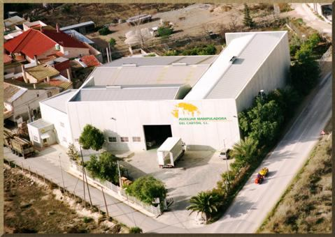
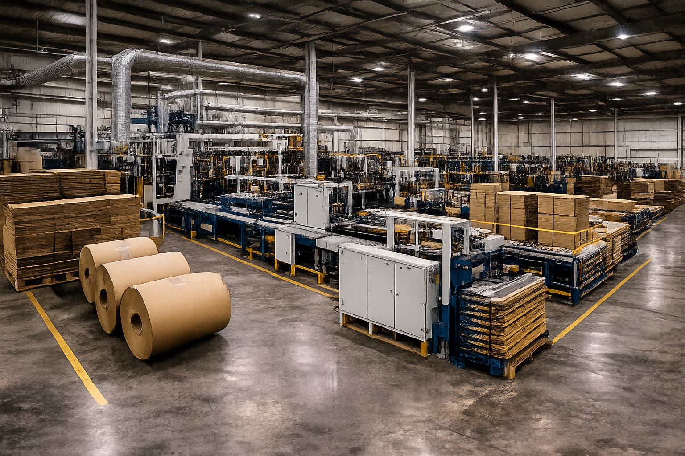
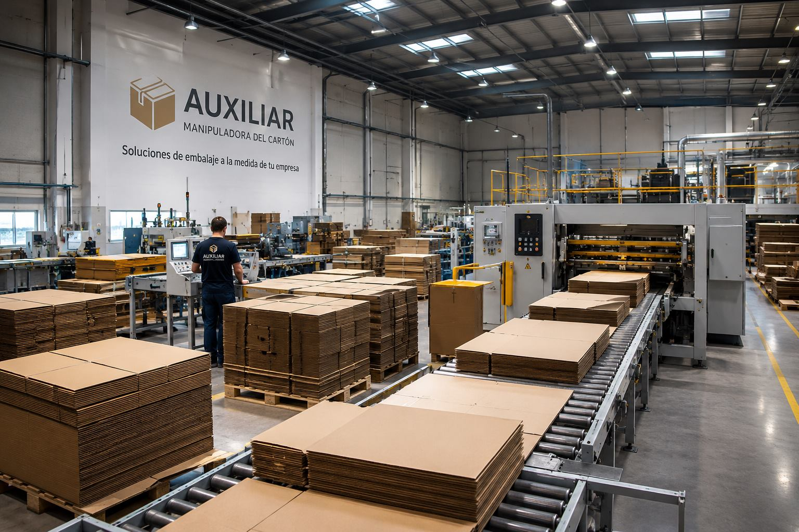
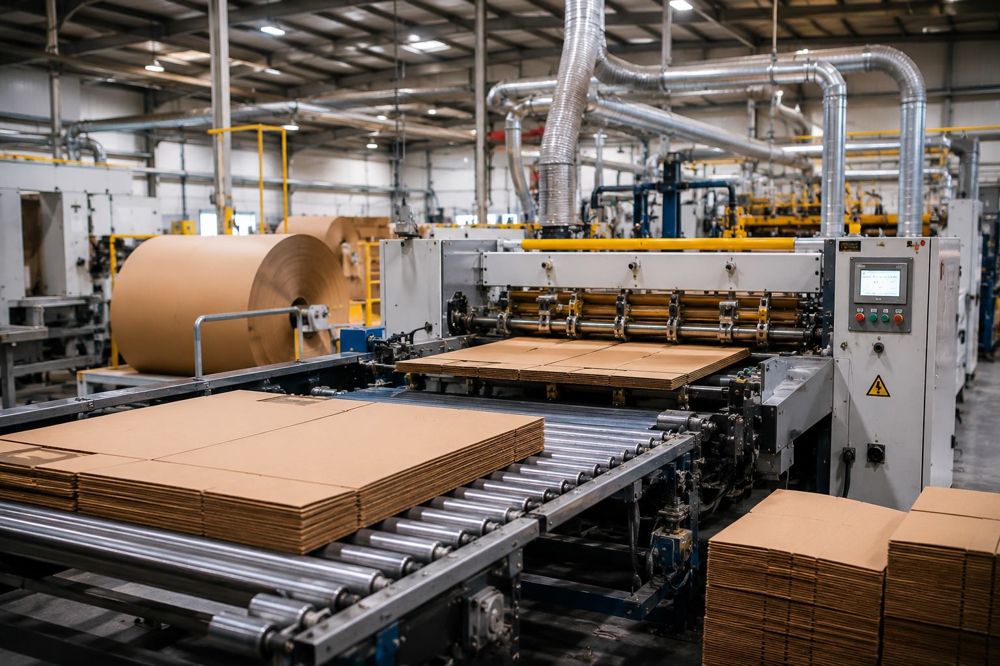
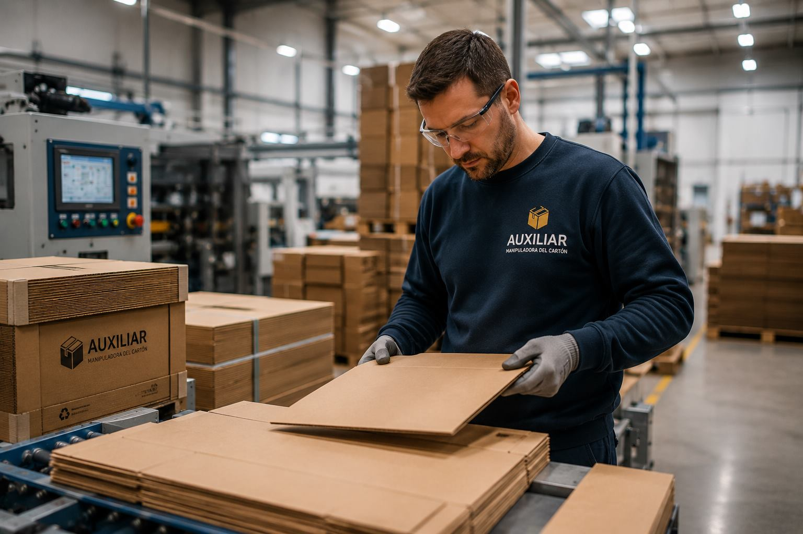
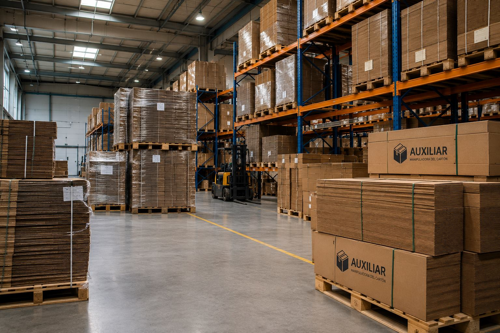

Planta propia, maquinaria propia y un equipo técnico que conoce cada fase del proceso de fabricación.
Comenzamos fabricando cartón ondulado para el tejido industrial de nuestra región, con la calidad de producto y el trato cercano como sello desde el primer pedido.
Ampliamos planta, maquinaria y equipo técnico para dar respuesta a clientes de sectores cada vez más diversos, sin perder el control de calidad en cada lote.
Hoy somos una empresa industrial consolidada, con planta propia y distribución en toda España, que sigue invirtiendo en producción y en personas.

Nuestra nave industrial está organizada para optimizar cada fase del proceso: desde la recepción de las bobinas de papel hasta la salida de los pedidos ya paletizados, con espacio de almacenaje para series grandes y entregas urgentes.

Disponer de planta y maquinaria propia nos permite controlar cada fase de la fabricación y ofrecer plazos de entrega más ágiles, sin depender de terceros para producir tu pedido.

Cada pedido pasa por impresión, troquelado, montaje y control de calidad antes de salir de planta, con la maquinaria y los tiempos ajustados a cada gramaje de cartón.
Ver proceso de fabricación completo arrow_forward
Cada lote pasa por controles de resistencia, medida y acabado antes de salir de planta. Nuestro equipo técnico supervisa el proceso de principio a fin para garantizar el mismo resultado cada vez.

Cuéntanos tu proyecto y te preparamos una propuesta de embalaje sin compromiso.
Solicitar presupuesto